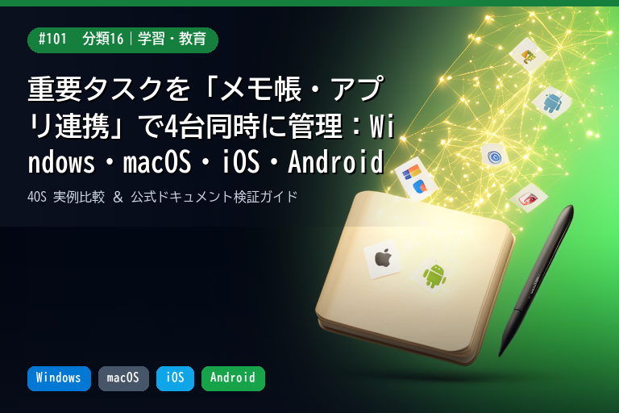

#101｜分類16: 学習・教育・自己啓発 2026-11-28

重要タスクを「メモ帳・アプリ連携」で4台同時に管理：Windows・macOS・iOS・Androidの標準機能活用実例
「仕事や勉強のタスク、スマホでもPCでも見られるようにしたいけれど、どのアプリを使えばいいのかわからない……」
「WindowsとiPhone、さらにiPadやAndroidも持っているから、全部のデバイスで同期させるのが難しそう……」
そんな悩みを持つ方は非常に多いです。特に学習や業務において、デバイスを移動しながらシームレスに情報を引き継げる環境は、生産性を左右する重要な要素です。
この記事では、Windows 11、macOS、iOS（iPhone/iPad）、Androidの4つの主要OSすべてにおいて、追加費用をかけずに「標準機能」をフル活用してタスクやメモを一元管理する方法を徹底解説します。それぞれのOSでの具体的な操作手順から、よくあるトラブルの解決策まで網羅しているため、この記事を読み終える頃には、あなたの手元にあるすべてのデバイスが「最強のタスク管理チーム」へと進化しているはずです。
4OS比較早見表
まずは、各OSにおける標準的なメモ・タスク管理の仕組みと、同期の核となるクラウドサービスを整理しましょう。
| OS | 主要な標準アプリ | 同期用クラウドサービス | 特徴・強み |
|---|---|---|---|
| Windows 11 | OneNote / Microsoft To Do | OneDrive | ビジネス連携が強力。高度なノート構造が可能。 |
| macOS | メモ (Notes) | iCloud | Appleエコシステム内での極めてスムーズな同期。 |
| iOS | メモ (Notes) | iCloud | 手書き入力（Apple Pencil）との親和性が抜群。 |
| Android | Google Keep / カレンダー | Google ドライブ/アカウント | 検索性が高く、Googleサービスとの統合がスムーズ。 |
1. Windows 11 での実例手順
Windows環境では、Microsoftの強力なエコシステムを活用するのが最も効率的です。
標準機能実例手順
- アプリの準備: 「Microsoft Store」またはプリインストールされている「To Do」および「OneNote」を起動します（どちらも無料です）。
- ノートの作成: 「OneNote」で授業の講義内容やプロジェクトの課題リストを作成します。右上の共有/保存アイコンからOneDriveに保存を選択してください。
- タスクの登録: 「To Do」アプリを開き、「タスクを追加」をクリック。詳細設定で「期限」を設定します。
- 通知の活用: Windows 11標準のリマインダー機能により、期限が近づくとデスクトップ通知を受け取れます。
標準機能の制限事項
- OneNote: テキスト中心の構造には優れていますが、複雑な3Dグラフや高ビットレート動画の埋め込みにはOfficeデスクトップアプリが必要になる場合があります。
- To Do: タスク管理に特化しているため、Wordのような自由記述形式での長期保存（OneDriveフォルダへの直接リンクなど）は非対応です。長文メモはOneNoteへ逃がす運用を推奨します。
よくあるトラブルと解決チェックリスト
- 「同期が止まっている」エラー
- 原因：ネットワーク接続不良、またはOneDriveサービスの一時停止。
- 解決： 「設定 > アカウント > Microsoft アカウント」から一度サインアウトし、再度ログインしてください。
- To Do のタスクが他デバイスで表示されない
- 原因：Windowsにのみインストールされているか、アカウント不一致。
- 解決： 「設定 > アプリ > インストールされたアプリ」から「To Do」を再インストールし、正しいMicrosoftアカウントでログインしてください。
- OneNote のページが編集できない（ロック状態）
- 原因： 他のユーザーまたは共有グループによる書き込み制限。
- 解決： 「ファイル > オプション > 保存オプション」を確認するか、「設定 > プライバシーとセキュリティ」から「他のOneDriveユーザーとの同期を有効にする」をオンに再確認してください。
2. macOS での実例手順
macOSでは、Apple純正の「メモ」アプリを軸にした運用が基本となります。
標準機能実例手順
- iCloudの有効化: 「システム設定 > Apple ID (自分の名前) > iCloud」から「メモ」のチェックボックスをオンにします。
- 情報の入力: メモアプリで学習スケジュールやToDoを作成します。iCloud Driveを通じて自動保存されます。
- マルチデバイス連携: iOSデバイスと連携させる場合は、「共有リスト」機能を使ってiPadやiPhoneで同時に編集可能に設定します。
標準機能の制限事項
- クロスプラットフォームの壁: macOSのメモアプリはWindowsユーザーとの直接同期にはiCloud.comブラウザ経由が必要となり、ネイティブクライアントはありません。
- Android連携: Android側ではGoogle Keepとの相互運用性は限定的で、基本的にはテキストのコピー＆ペーストが主な手段となります。
よくあるトラブルと解決チェックリスト
- 「メモ」アプリが開かない・同期エラーが出る
- 原因： iCloudサービスの認証期限切れまたはネットワーク問題。
- 解決： 「システム設定 > Apple ID > メモ」で「iCloudのメモをオフ/オン」に切り替えて再同期させてください。
- 共有リストが他デバイスに反映されない
- 原因： iOS/macOSデバイスのiCloudアカウント不一致。
- 解決： すべてのAppleデバイスで同じApple IDでログインしているか確認してください。
- メモアプリ内の検索が機能しない
- 原因： インデックス構築中の一時停止またはキャッシュエラー。
- 解決： アプリを再起動するか、「システム設定 > Siri & Spotlight」でインデックス更新を確認してください。
3. iOS（iPhone / iPad）での実例手順
モバイル端末では、直感的な操作と「共有リスト」の活用が鍵となります。
標準機能実例手順
- ノート作成: 「メモ」アプリを起動し、新規ノートを作成して授業の要点や課題を入力します。
- 共有リストの構築: 右上の「共有リスト」ボタンから「新しい共有リスト」を作成。「リンク先を開く」でURLをコピーし、他のデバイスへ共有可能です。
- iPadでの活用: iPadのペン入力機能を活用し、Apple Pencilで図解を追加しながらメモを編集します。
標準機能の制限事項
- フォーマットの限界: iOSメモアプリはテキストと画像中心です。音声認識による全文変換や複雑な表組みには限界があります。
- Androidとの同期: 公式に非対応のため、Google Keep等と連携させる場合は手動でのデータ移行が必要です。
よくあるトラブルと解決チェックリスト
- 「メモ」アプリで文字化けする・保存できない
- 原因： iCloudの同期設定がオフになっている。
- 解決： 「設定 > [自分の名前] > メモ」から「iCloudでメモをオンにする」を確認し、再起動してください。
- 共有リストへのリンクが開けない
- 原因： Safariブラウザの制限またはネットワーク接続の問題。
- 解決： 「設定 > Safari」で「JavaScriptを有効にする」と確認するか、履歴とデータをリセットしてください。
- 音声入力が認識しない
- 原因： Siriの言語設定ミスまたはマイク権限不足。
- 解決： 「設定 > メモ」でキーボードのオプションを再選択し、「プライバシーとセキュリティ」でマイクアクセス許可を確認してください。
4. Android での実例手順
Androidでは、Googleエコシステムとの親和性を最大限に活かします。
標準機能実例手順
- Google Keepの起動: プリインストールまたはPlayストアから「メモ (Keep)」アプリを起動します。
- 重要タスクのピン留め: 「＋」ボタンで新規ノートを作成し、学習目標を入力。「ピン留め」をしてホーム画面に近い位置に保持します。
- カレンダー連携: 「設定 > アカウント管理」からGoogleカレンダーへの同期を確認します（機種によりアプリ内カレンダー表示が可能です）。
標準機能の制限事項
- UIの差異: メーカー固有UI（Samsung OneUIなど）により、メニュー階層やアイコン名が異なる場合があり、操作手順に差が生じることがあります。
- クロスOS連携: Windows/macOS/iOSとの直接同期は非対応です。Googleアカウント経由でWebブラウザ（Chrome）を介した閲覧が必要になります。
よくあるトラブルと解決チェックリスト
- 「メモ」アプリが起動しない・クラッシュする
- 原因： アプリキャッシュの不整合またはストレージ不足。
- 解決： 「設定 > アプリ > メモ (Keep) > ストレージとキャッシュ」から「キャッシュをクリア」してください。
- ピン留めされたノートが表示されない
- 原因： アカウント同期の遅延またはアプリバージョンの不整合。
- 解決： Playストアで最新バージョンに更新するか、一度ログアウトして再ログインしてください。
- 音声入力が機能しない
- 原因： Googleアシスタントの権限設定ミスまたはマイクオフ。
- 解決： 「設定 > アプリ > メモ (Keep) > 権限」で「マイク」へのアクセス許可をオンにしてください。
【クロス OS シナリオ】学習・教育現場での活用事例と注意点
4つのOSを使い分ける際、特に学習や教育の現場では以下の3点を意識すると効率が劇的に向上します。
- オンライン学習サービスとの連携:
ZoomやTeamsなどの会議中にOneNote（Win/mac）またはメモアプリ（iOS/And）でリアルタイムメモを取る場合、クラウド同期は必須です。ノイズキャンセリングイヤホンを使用する際は、「設定 > サウンド」で出力デバイスを正しく選択し、システムがマイク入力を誤認しないよう注意しましょう。 - スタイラスペンとの連携:
iPadのApple PencilやSurface Pen（Win）では標準アプリでの書き込みが可能ですが、OS間でペンのデータ形式は異なります。図解などは「画像として保存・共有」することで、どのデバイスからでも正確に閲覧できるようになります。 - オフラインワークフローの重要性:
図書館や移動中などネット接続がない環境でも、「To Do」や「メモ」はローカルにデータを保持します。まずは手元の端末に入力し、オンライン環境に戻った際に自動同期させる流れを徹底しましょう。
まとめ：快適なマルチOS環境を作るポイント
4つのOSを横断してタスクを管理する鍵は、「標準アプリのサインイン」と「クラウドストレージ（OneDrive/iCloud/Google Drive）の設定」に集約されます。これらを正しく設定するだけで、高価なサブスクリプションツールを使わなくても強力なワークフローが構築可能です。
さらに学習効率を最大化したい方には、以下の周辺機器・ツールの導入もおすすめです：
* オンライン学習サービス: 体系的な知識習得のために、自分のペースで進められるプラットフォームを活用する。
* スタイラスペン: iPadやSurfaceでの手書きメモは、記憶の定着率を高めるために非常に有効です。
* ノイズキャンセリングイヤホン: 集中力を削ぐ周囲の雑音を遮断し、深い学習状態（ディープワーク）へ導きます。
デバイスの壁を超えた一元管理を実現し、あなたの学習・業務環境をよりスマートに進化させていきましょう。
参考文献・公式ドキュメント（一次情報ソース）
本記事の手順・仕様は以下の各OSおよびツールの公式ドキュメントに基づいています。OSアップデートによりメニュー名称や挙動が変わる場合があるため、最新仕様の確認にもご活用ください。
- [Windows / 共通] OneNote が同期できない場合の問題を解決する - Microsoft サポート
- [macOS] Mac用メモユーザガイド - Apple サポート (日本)
- [iOS] iPhoneでメモを作成する/書式を設定する - Apple サポート (日本)
- [Android / 共通] Google Keep の使い方 - Google Keep ヘルプ